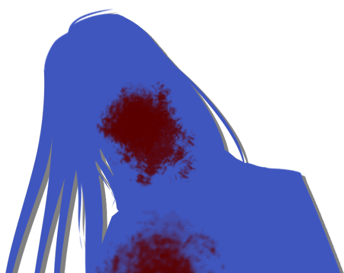
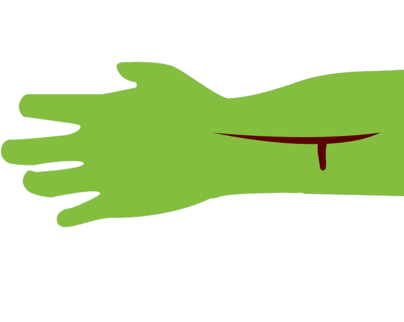
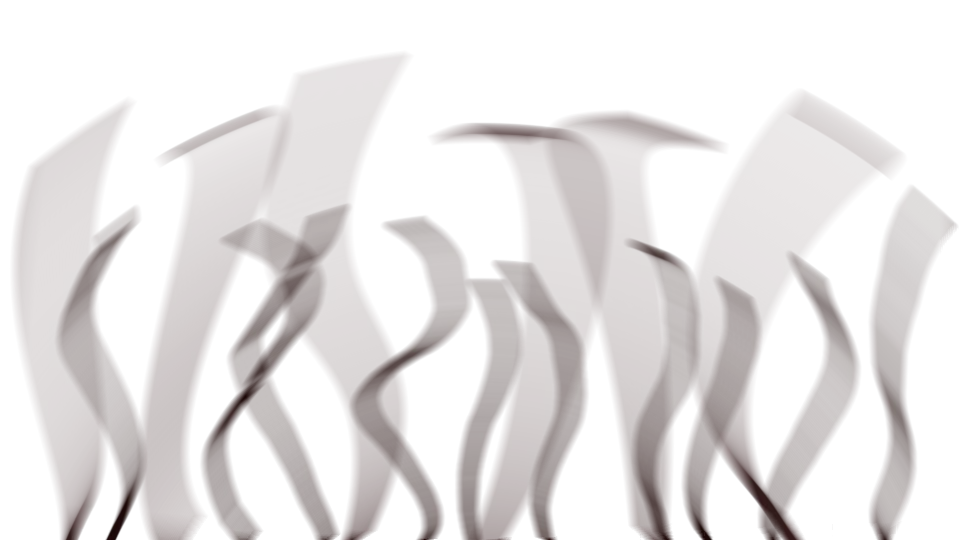

This scene is not unlocked yet in your progress
The Trumpeter of the Apocalypse ~Bluff and Counter-Bluff~

"It's finally high enough to stand up in..."
"............"
Taking the mummy's place, we crawled into the hole.
At first the passage was so narrow a grown man could only have gotten through on his belly, but it widened little by little, and after some 10 meters it was finally high enough for me to stretch.
It was wide enough, too, for the two of us to walk side by side.
"............"
Taking the mummy's place, we crawled into the hole.
At first the passage was so narrow a grown man could only have gotten through on his belly, but it widened little by little, and after some 10 meters it was finally high enough for me to stretch.
It was wide enough, too, for the two of us to walk side by side.
"Chiga-nee, do you know where the hot spring on Mount Itohime is?"
"More or less..."
More or less, she says...
If they call it 'a volcano of sulfur,' I expect the summit of Mount Itohime is quite high up.
If so, the way through this cave should be quite steep, too.
I'm worried whether Chiga-nee, her strength drained, can make it the rest of the way.
"More or less..."
More or less, she says...
If they call it 'a volcano of sulfur,' I expect the summit of Mount Itohime is quite high up.
If so, the way through this cave should be quite steep, too.
I'm worried whether Chiga-nee, her strength drained, can make it the rest of the way.
"Chiga-nee, aren't you tired? We don't even know what's up ahead..."
"This much is fine. It's nothing. I got lots of sweets just now, and I haven't moved today as much as everyone thinks."
"This much is fine. It's nothing. I got lots of sweets just now, and I haven't moved today as much as everyone thinks."
Kidnapped, escaped on her own, and unconscious until just now: that's Chiga-nee.
Honestly, I can't quite believe she's fine.
Honestly, I can't quite believe she's fine.
My phone still has plenty of charge, but the battery won't last long enough to run the light for hours.
If the battery dies in this darkness, we're sure to be lost in here.
The path has been twisting and winding for a while now, and I can't even tell which way I'm facing at this point.
I can't even tell whether it forks or just bends.
If the battery dies in this darkness, we're sure to be lost in here.
The path has been twisting and winding for a while now, and I can't even tell which way I'm facing at this point.
I can't even tell whether it forks or just bends.
They say if you walk with one hand on the wall you're sure to reach the exit, but that's a lie.
Not every wall connects to the outer edge of the maze.
Not that I'd want to test anything so uncertain in a place like this.
Not every wall connects to the outer edge of the maze.
Not that I'd want to test anything so uncertain in a place like this.
"Chiga-nee, shouldn't we have brought something for light?
With only a phone―"
"It's fine. Even in the dark, I can see."
"Really? Then... But still, isn't that dangerous―"
"Goto-chan, there's no time. So we just need to get there before the battery dies."
"It's fine. Even in the dark, I can see."
"Really? Then... But still, isn't that dangerous―"
"Goto-chan, there's no time. So we just need to get there before the battery dies."
Chiga-nee seems strangely rushed.
Shigatsu Youka's movements have grown more active, and I understand there's no time to take it easy, but...
Either way, nothing can start until we bring Kana-chan.
And in the first place, even if we do bring Kana-chan, what are we supposed to do?
Shigatsu Youka's movements have grown more active, and I understand there's no time to take it easy, but...
Either way, nothing can start until we bring Kana-chan.
And in the first place, even if we do bring Kana-chan, what are we supposed to do?
"Chiga-nee, how can Kana-chan's power stand against Shigatsu Youka?
Do you know anything?"
"............"
"............"
Chiga-nee said nothing in reply.
Chiga-nee has no idea either, does she?
"............"
"............"
Chiga-nee said nothing in reply.
Chiga-nee has no idea either, does she?

"From here on, the slope gets steep."
"Oh, yes..."
So in the end, the point of bringing Kana-chan is still a mystery...
"Give me the light?"
"Yes."
I handed my phone, light on, to Chiga-nee.
"Oh, yes..."
So in the end, the point of bringing Kana-chan is still a mystery...
"Give me the light?"
"Yes."
I handed my phone, light on, to Chiga-nee.
At that, the way ahead lit up bright and clear.
It seemed to have turned into a straight tunnel.
Is the slope about 10 degrees? It's quite a steep path.
Suppose this slope continues, and we arrive in 1 hour where it normally takes 2...
That works out to arriving 340 meters higher than here.
It seemed to have turned into a straight tunnel.
Is the slope about 10 degrees? It's quite a steep path.
Suppose this slope continues, and we arrive in 1 hour where it normally takes 2...
That works out to arriving 340 meters higher than here.
"Um, Chiga-nee, let's go back after all. The path ahead is going to be a lot steeper, I expect.
Your strength worries me, and so does the phone battery..."
"............"
Chiga-nee hadn't tried to say a word for a while.
Eyes fixed far ahead, she climbed the slope in silence.
She looks to be pushing herself way too hard, so I'd better stop her after all.
"............"
Chiga-nee hadn't tried to say a word for a while.
Eyes fixed far ahead, she climbed the slope in silence.
She looks to be pushing herself way too hard, so I'd better stop her after all.
"Chiga-nee! Please wait!"
Chiga-nee―I gave her sleeve a hard tug.
Chiga-nee―I gave her sleeve a hard tug.

"Don't get in my way!"
Only with Chiga-nee's roar did I finally grasp how long this tunnel was.
A tunnel longer than I'd imagined―an endless road that would not allow even Chiga-nee's shout to echo.
This endless road, and Chiga-nee's roar, froze my whole body.
What... what is going on?
Chiga-nee... Chiga-nee is... wrong...?
A tunnel longer than I'd imagined―an endless road that would not allow even Chiga-nee's shout to echo.
This endless road, and Chiga-nee's roar, froze my whole body.
What... what is going on?
Chiga-nee... Chiga-nee is... wrong...?

"If you get in my way...
you die?"
"Huh...?"
"You can choose, you know? Die here... or come with me. Not that I intend to give the phone back."
"Ch-Chiga-nee...!"
Without the light, there's no getting back to the entrance.
Chiga-nee, what's happened to you...?
"Huh...?"
"You can choose, you know? Die here... or come with me. Not that I intend to give the phone back."
"Ch-Chiga-nee...!"
Without the light, there's no getting back to the entrance.
Chiga-nee, what's happened to you...?
"No! Let's go back! It's too dangerous like this!"
"What's dangerous about it?"
"Because your strength won't hold out like this! Can't you see for yourself that you're too worn down even to judge that!?"
"Mm... I'm sane. The Goddess―I'm going to see her."
"What!?"
"What's dangerous about it?"
"Because your strength won't hold out like this! Can't you see for yourself that you're too worn down even to judge that!?"
"Mm... I'm sane. The Goddess―I'm going to see her."
"What!?"
The Goddess―what does she mean!?
Could she mean Shigatsu Youka!?
Could she mean Shigatsu Youka!?
"Chiga-nee, don't tell me you're already dead and..."
"Ahahahaha! Wrong! I'm still alive!"
There is a way to become Shigatsu Youka's servant without becoming a corpse.
It is to become the first or second generation, and then the fourth.
So it's true, Chiga-nee...
Chiga-nee has been parasitized...!
"Ahahahaha! Wrong! I'm still alive!"
There is a way to become Shigatsu Youka's servant without becoming a corpse.
It is to become the first or second generation, and then the fourth.
So it's true, Chiga-nee...
Chiga-nee has been parasitized...!
Earlier, when we came face to face with the corpses in the forest, we headed for the abandoned hut.
But meanwhile, Chiga-nee was overpowered by the corpses and carried down here underground.
Then she was injected with falsificaso to cure her green eyes, and after that, with Droga as well.
In other words, the Chiga-nee in front of me now is first generation.
And that first-generation Chiga-nee went wrong when she touched that mummy just now.
But meanwhile, Chiga-nee was overpowered by the corpses and carried down here underground.
Then she was injected with falsificaso to cure her green eyes, and after that, with Droga as well.
In other words, the Chiga-nee in front of me now is first generation.
And that first-generation Chiga-nee went wrong when she touched that mummy just now.
That sound, ringing out without warning―
Not far off―it's sounding right nearby.
A roar so loud it feels like it will shatter not just my eardrums but my bones.
If this sound is ringing right nearby, then―no!
Not far off―it's sounding right nearby.
A roar so loud it feels like it will shatter not just my eardrums but my bones.
If this sound is ringing right nearby, then―no!
"So you finally noticed."
From behind, a human voice―one I'd heard somewhere before...
From behind, a human voice―one I'd heard somewhere before...
"Kotaro-san...?"
"Hahaha! Ah, I see―this is the first time you've seen me."
No way... It can't be! It's impossible!
Is this man really...?
"Hahaha! Ah, I see―this is the first time you've seen me."
No way... It can't be! It's impossible!
Is this man really...?
"Nice to meet you. I'm Eiichiro Niimura, Haruka's father.
You really are always so good to Haruka and Mifuyu-chan."

"Well, what will you do? Come with us?
Or... die here?"
"Now, now, Chigaya-chan, no need to scare her so much.
Let's see―everyone calls you Goto-chan, is that right?
Goto-chan, come along with us too. Everyone will be coming eventually anyway."
"N-no...!"
"N-no...!"
With Chiga-nee blocking the way ahead and Eiichiro Niimura behind, all I could do was put my back to the tunnel wall.
I know there's no way out.
But just meekly going on ahead from here is dangerous too.
Die here, or obey the two of them and go on ahead.
Those are the only two choices left to me now―
I know there's no way out.
But just meekly going on ahead from here is dangerous too.
Die here, or obey the two of them and go on ahead.
Those are the only two choices left to me now―
No! Don't give up! Times like this are exactly when you use your head!
Think! Think...!
How do I get out of this corner!?
How do I escape safely!?
How...!
Think! Think...!
How do I get out of this corner!?
How do I escape safely!?
How...!
"Goto-chan, there's no point agonizing over it so much, you know? You of all people can see that much, can't you?"
"What will it be? It makes no difference at all if one little Goto-chan dies here, you know?"
"I... I under... stand..."
There's nothing for it but to do as I'm told.
"What will it be? It makes no difference at all if one little Goto-chan dies here, you know?"
"I... I under... stand..."
There's nothing for it but to do as I'm told.
............
I tried to step forward, but my legs froze in fear and wouldn't move.
My legs refusing to move was a first for me, and it only made me panic all the more.
And then the strength went out of my legs completely, and I sank to the ground.
My legs refusing to move was a first for me, and it only made me panic all the more.
And then the strength went out of my legs completely, and I sank to the ground.
"Pathetic, for a genius girl..."
"Because Chigaya-chan threatened her..."
"So it's my fault?"
"Hmm... Well, leave it to me. I'm more used to this sort of thing."
At that, Eiichiro Niimura crouched and met my eyes.
"Because Chigaya-chan threatened her..."
"So it's my fault?"
"Hmm... Well, leave it to me. I'm more used to this sort of thing."
At that, Eiichiro Niimura crouched and met my eyes.
I looked at Eiichiro Niimura's face once more.
He is, it seems, a dead man.
12 years ago he fell from the cherry tree in Central Park and died.
Many people witnessed it; his death should be an undeniable fact.
He is, it seems, a dead man.
12 years ago he fell from the cherry tree in Central Park and died.
Many people witnessed it; his death should be an undeniable fact.
Yet the one before me now is a man who looks like nothing but a living human being.
Kotaro-san's spitting image.
Eiichiro Niimura and Kotaro-san are twin brothers.
That's it! Isn't this man really Kotaro-san?
That's far more realistic than a walking corpse!
Kotaro-san's spitting image.
Eiichiro Niimura and Kotaro-san are twin brothers.
That's it! Isn't this man really Kotaro-san?
That's far more realistic than a walking corpse!
"Um... you're... Kotaro-san, aren't you..."
If this is right, the mastermind is Kotaro-san.
Even so, Kotaro-san pretending to be Eiichiro Niimura is quite a stretch.
If this is right, the mastermind is Kotaro-san.
Even so, Kotaro-san pretending to be Eiichiro Niimura is quite a stretch.
"Hmm... If I brought my brother here you'd be convinced, I suppose, but I don't know where he is right now..."
"Uncle, why not stab your arm with the knife?"
"Chigaya-chan... that would frighten Goto-chan..."
"She's already scared, though?"
"No helping it, then..."
"Uncle, why not stab your arm with the knife?"
"Chigaya-chan... that would frighten Goto-chan..."
"She's already scared, though?"
"No helping it, then..."
Chiga-nee held out a knife to the man who seemed to be Eiichiro Niimura.
And he rolled up his sleeve and made a cut just deep enough for a little blood to seep out.
And he rolled up his sleeve and made a cut just deep enough for a little blood to seep out.

"All right, watch closely."
At that, the earth at Eiichiro Niimura's feet began to heave and squirm.
At that, the earth at Eiichiro Niimura's feet began to heave and squirm.

From it, slowly, a small tree grew.
Smooth and natural, like a magician pulling a string of flags from his sleeve― and utterly unnatural in its movement.
Smooth and natural, like a magician pulling a string of flags from his sleeve― and utterly unnatural in its movement.
"Goto-chan, you looked into the apocalyptic sound, didn't you?
That's the sound made when the hyphae dig a tunnel, the ground above cracks, and air moves in and out.
Hyphae, I say, but not thread-thin things: at the Goddess's size, there are hyphae as much as 5 meters across.
What's growing out of the ground here is one of the small ones."
Eiichiro Niimura had said that much when the thing that seemed to be a hypha wound around the cut arm.
Just as I thought it had wrapped the wound to hide it,
Just as I thought it had wrapped the wound to hide it,
the hypha slipped back into the hole.
"Does that make it clear?"
Too irregular a showing to be called a magic trick― a performance that gave away the trick and the gimmick as it went.
Eiichiro Niimura's wound had vanished, as if time had been turned back.
Too irregular a showing to be called a magic trick― a performance that gave away the trick and the gimmick as it went.
Eiichiro Niimura's wound had vanished, as if time had been turned back.
"B-but... that still doesn't prove you're Eiichiro Niimura...
It only means your wound healed―"
"Well, does it really matter either way? Whether I'm Eiichiro or my brother, you have to come with us. At the very least, just as you imagined, the Goddess is a huge fungus that keeps growing by parasitizing―you understood that, right?"
"Well, does it really matter either way? Whether I'm Eiichiro or my brother, you have to come with us. At the very least, just as you imagined, the Goddess is a huge fungus that keeps growing by parasitizing―you understood that, right?"
"Goto-chan gets gentle treatment from you, doesn't she? I got such rough treatment..."
"Ahaha, sorry, Chigaya-chan. Back then I had to steer you, so it was a necessary evil. And if we're talking about that, you did some awful things to Haruka yourself, didn't you?"
"True enough..."
There seems to have been a great deal of back-and-forth where I couldn't see.
Niimura-senpai―what on earth happened to her...?
"Ahaha, sorry, Chigaya-chan. Back then I had to steer you, so it was a necessary evil. And if we're talking about that, you did some awful things to Haruka yourself, didn't you?"
"True enough..."
There seems to have been a great deal of back-and-forth where I couldn't see.
Niimura-senpai―what on earth happened to her...?
"I just don't like violence, you see. I'd like to carry this out as peacefully as we can."
"Dawdle too long and Kana will come, you know?"
"Hmm, that's true too..."
Come to think of it, Erika-chan said Kana-chan's green-eyed power was needed.
Is what these two are saying connected to that...?
"Dawdle too long and Kana will come, you know?"
"Hmm, that's true too..."
Come to think of it, Erika-chan said Kana-chan's green-eyed power was needed.
Is what these two are saying connected to that...?
If so, there's only one thing I can do: buy time.
Reach the summit, and Shigatsu Youka's main body sits enthroned there.
Kana-chan―what about her works against Shigatsu Youka, I don't know, but Erika-chan should be on her way to call everyone right now.
If we can join up with everyone, then maybe...
Reach the summit, and Shigatsu Youka's main body sits enthroned there.
Kana-chan―what about her works against Shigatsu Youka, I don't know, but Erika-chan should be on her way to call everyone right now.
If we can join up with everyone, then maybe...
"Hic...
Waaah...!"
I burst out crying as loudly as I can, seizing the moment.
It's fake crying, but wanting to cry is real.
But this should let me buy time.
I burst out crying as loudly as I can, seizing the moment.
It's fake crying, but wanting to cry is real.
But this should let me buy time.
"H-hey, don't cry..."
"Uncle, honestly, soft-hearted even dead."
"Goto-chan, shall I carry you on my back, if you like?"
"If she won't listen, you could just kill her... This girl's no use for anything, is she?"
"Chigaya-chan, you mustn't say things like that."
"Uncle, honestly, soft-hearted even dead."
"Goto-chan, shall I carry you on my back, if you like?"
"If she won't listen, you could just kill her... This girl's no use for anything, is she?"
"Chigaya-chan, you mustn't say things like that."
Eiichiro Niimura soothes me; Chiga-nee is irritated.
That mild temper of his, it seems, is just as it was in life.
If so, I'll use it to the fullest.
That mild temper of his, it seems, is just as it was in life.
If so, I'll use it to the fullest.
"Waaah! I'm scared!"
"Oh, come on... Look, once our business is done, I'll send you home safe and sound."
"Oh, come on... Look, once our business is done, I'll send you home safe and sound."
"Don't touch me! You're going to kill me and turn me into a cherry tree!"
"Now what..."
"Ugh, she's so irritating. Why not knock her out and carry her?"
"Now what..."
"Ugh, she's so irritating. Why not knock her out and carry her?"
"Like I said, let's avoid rough stuff as much as we can."
"What! You knocked ME out!"
"Well, that's because, unlike Goto-chan, you're strong, Chigaya-chan..."
"Forget it, I'll do it."
"No, I said. Goto-chan is a valuable hostage. So let's try not to hurt her..."
"What! You knocked ME out!"
"Well, that's because, unlike Goto-chan, you're strong, Chigaya-chan..."
"Forget it, I'll do it."
"No, I said. Goto-chan is a valuable hostage. So let's try not to hurt her..."
"Is that the Goddess's wish!?"
"Not exactly, but..."
"Then force is fine, isn't it!?"
"Just listen to me for once..."
"Not exactly, but..."
"Then force is fine, isn't it!?"
"Just listen to me for once..."
At that, the two of them started arguing.
Two people parasitized by the same creature falling out is utterly absurd, but it seems I've managed to drag them into my plan.
Even if there's nothing for it but to go on ahead, I'll pull them onto my pace, even a little, and buy time.
Two people parasitized by the same creature falling out is utterly absurd, but it seems I've managed to drag them into my plan.
Even if there's nothing for it but to go on ahead, I'll pull them onto my pace, even a little, and buy time.
But either way, I'll be taken to Shigatsu Youka.
What will be done to me there―I don't even want to imagine.
All I can do is hold these two up like this.
The rest is up to everyone... Please...!
What will be done to me there―I don't even want to imagine.
All I can do is hold these two up like this.
The rest is up to everyone... Please...!